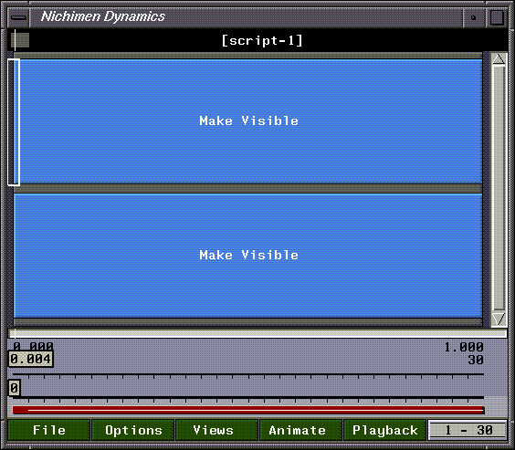
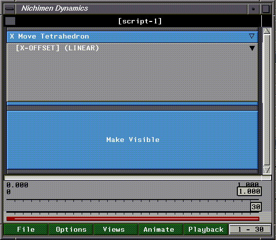

[N-World Contents] [Book Contents] [Prev] [Next] [Index]
N-Dynamics Basics
In this chapter you'll learn some of the basic concepts and script editing skills you'll need to work in N-Dynamics.
In this Chapter
You'll learn how to perform some of the basic tasks you'll need to be able to do with N-Dynamics:
Creating a Script
Animations are created in scripts. A script consists of a hierarchy of channels. Each channel represents a specific action to perform on an object (or objects) in N-Geometry.
To create a new script, make sure that the N-Dynamics script editor window is open. There are two ways to open N-Dynamics:
The script editor looks like this:
Figure 1.1 The script editor
To create a new script:
1. (CLICK-L) on File.
- The following dialog box appears:
Figure 1.2 The script editor
2. (CLICK-L) on Create New Script.
- A dialog box appears, where you may specify a new name for the script:
Figure 1.3 Naming a script
- Your home directory is specified by default. For now, (CLICK-L) on Do It to use the directory and script name.
3. Enter the number of channels for the script in the dialog box that appears:
Figure 1.4 Specifying the number of channels for a script
- You can move the slider back and forth to change the number of channels in the script, or (CLICK-L) right on the number to display a keypad where you can type in a number of channels:

Figure 1.5 Using the keypad
- For now, Abort out of this command, and (CLICK-L) on Do It to create a script with two channels. Your script editor window should look something like this:

Figure 1.6 The script editor with two channels
- Two blue rectangles, or channels, appear in the script editor window.
- The operation performed by a channel appears in the center of the channel; when you specify an object on which the operation is to be performed, the name of the object is added too.
Creating an Object to Animate
Before you can see how scripts work, though, you'll need to create an object to animate in N-Geometry. (As described earlier, N-Dynamics can be used to drive any of the other packages in N·World; we'll use some simple shape animations using shapes created in N-Geometry to get started.)
4. Open N-Geometry.
5. (CLICK-L) on GeoMenus>File>New Object>Tetrahedron.
- The object appears in the middle of the N-Geometry window:
Figure 1.7 A tetrahedron in N-Geometry
Selecting an N-Dynamics Operation
6. (CLICK-M) on the first Make Visible channel in the script.
- The following dialog appears:
Figure 1.8 Changing an operation
7. (CLICK-L) on the Operation text edit box, which currently contains a Make Visible operation.
- A menu, listing the various operation classes appears:
Figure 1.9 Using the keypad
Operations are color-coded by the application they pertain to:
8. (CLICK-L) on Geometry>Translation.
- A list of available translation operations appears:
Figure 1.10 Translation operations
- A translation operation moves an object along an axis without rotating it. To start, we just want to move the tetrahedron in a straight line.
9. (CLICK-L) on X Move.
- The parameters for the channel are updated:
Figure 1.11 X Move operation parameters
10. (CLICK-L) on the Object text edit field, which currently displays "None".
- A list of objects currently loaded into N-Geometry is displayed:
Figure 1.12 Object list
11. (CLICK-L) on Tetrahedron, then (CLICK-L) on Do It.
- Your script should now look something like this:

Figure 1.13 Curve channel
What's that gray channel for? The gray channel is a curve. It contains data that is passed to the parent operation at each frame as the script is animated.
12. (CLICK-L) on the [X-OFFSET] (LINEAR) channel.
- This opens up the channel:

Figure 1.14 Opening a curve channel
- If you open the channel, you can see what value is passed to the parent operation at any given frame; in this case, the value says how far to move the tetrahedron in the X direction.
13. Move the cursor back and forth over the curve channel.
- As you move the mouse back and forth, both the time box and frame box change to reflect the cursor's current position:
Figure 1.15 Now-time cursor positioned at frame 15
Toggling the Grid
You can constrain the placement of cues to even frames or turn that constraint off and insert cues at any point in between:
14. Press the "g" hot key to constrain the insertion of cues to even frame numbers.
- A brief message "Grid turned on" or "Grid turned off" is displayed at the bottom of the script editor window.
Inserting Cues
You change values in a curve channel either by sketching a curve or by inserting cues and assigning values to those cues.
15. Move the cursor over the curve channel again, move it to frame 15, and press the "s" hot key.
- The "s" hot key is used to insert elements-in this case, a new cue:
Figure 1.16 Opening a curve channel
Editing a Cue's Value
To change the value of a cue:
16. (CLICK-M) on the new cue to change its value.
- The following dialog box appears:
Figure 1.17 Editing a cue value
17. Use the slider to change the value to 30, then (CLICK-L) on Do It.
- The currently selected cue is highlighted in green; note that the curve now has some shape to it:
Figure 1.18 An edited cue
- Cues contain explicit values. Every channel has, by default, a cue at its beginning and end, but can have any number of additional cues.
18. (CLICK-L) on the Animate button.
- The tetrahedron animates from global center along the X axis, then back.
Figure 1.19 Animating the script
- Note. To stop an animation in progress, (CLICK-R) on the N-Dynamics window.
19. (CLICK-M) on the cue and change its value to -40, then animate the script again.
- This time the tetrahedron moves along the X axis in the negative direction.
Deleting an Element
As often happens, you may find that you want to delete something from an N-Dynamics script. In this case, let's delete the extra Make Visible channel:
20. Move the cursor over the extra Make Visible channel at the bottom of the script.
- Press the "Shift-D" hot key combination.
- This deletes the currently highlighted element (either a channel, a curve, or a cue).
After you delete the extra channel, any other channels in the script resize automatically to fit the available space.
Saving Your Script
N-Dynamics' save dialog box prompts you to save the script and any objects referenced by that script.
To save a script:
21. (CLICK-L) on File>Save Script.
- The N-Dynamics save dialog box opens:
Figure 1.20 Saving the script
- At this point you can both rename any objects and change the directory in which any objects or scripts will be saved.
- An "*" in the MOD column indicates that the element has not been saved in its current state. Objects with an "*" automatically have their Save toggles set. The last column in this dialog box tells you the type of element being saved.
22. Rename the script "move-tetrahedron".
23. Specify the directory in which you want to save the script.
- Note. You can't save scripts in the default directory:
/usr/local/ngc/demo/scripts
This directory contains original scripts that you always want to be able to refer to.
24. (CLICK-L) on Save.
- We'll use this script again in the next chapter, so make sure to save it!
Congratulations!
You've now learned some basic script editing skills, including creating and saving scripts and their referenced objects, assigning operations to channels, and editing cues. You'll use all these skills in the remaining tutorials in this chapter.
[N-World Contents] [Book Contents] [Prev] [Next] [Index]
 Another fine product from Nichimen documentation!
Another fine product from Nichimen documentation!
Copyright © 1996, Nichimen Graphics Corporation. All rights
reserved.